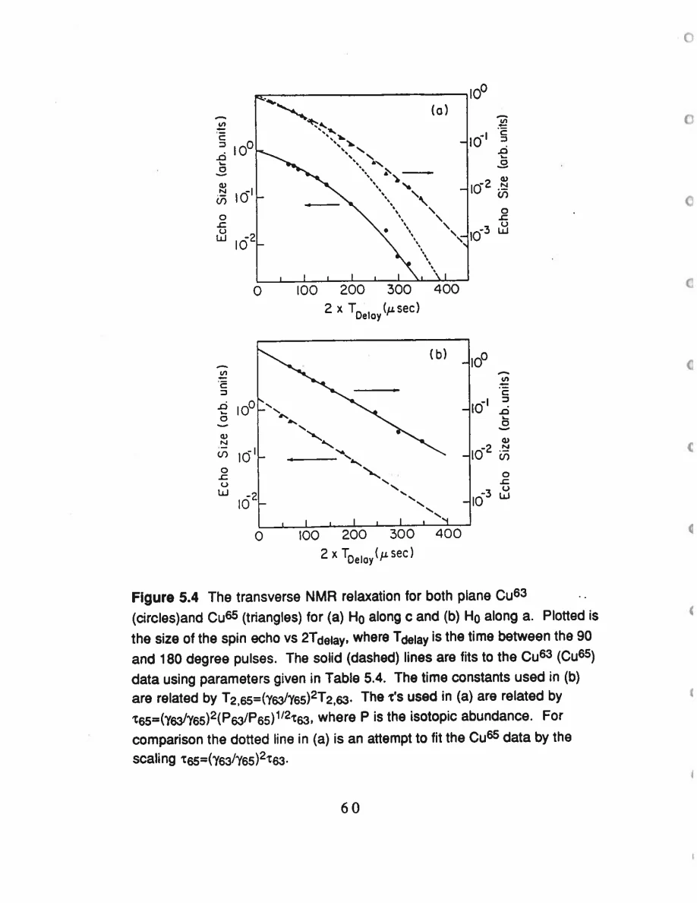
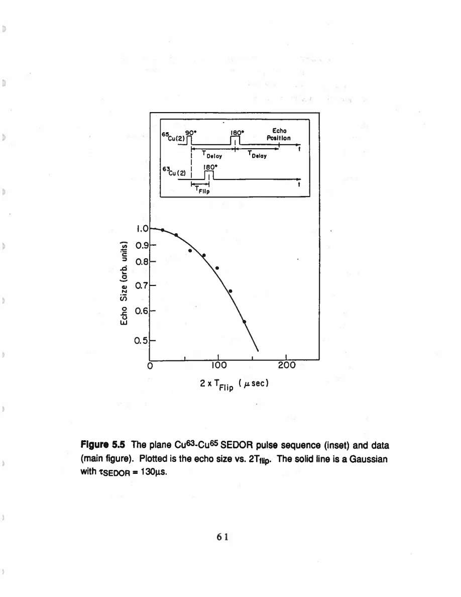

Pennington · supplied source 1989 · chapter unit
6. Echo decay, isotope probability and SEDOR
Abundance scaling and a second-isotope pulse test the coupling; its electronic origin needs a further model.
The question: What makes the extra plane-Cu Gaussian decay evidence for coupling?
Before you start: the terms you need
- Plane Cu / chain Cu: the two crystallographic copper sites in YBCO
- EFG: electric field gradient, which couples to a nuclear quadrupole moment
- Magnetic shift: the field-proportional frequency change after quadrupole contributions are separated
- W₁: the thesis’s elementary satellite population-transition rate, not automatically 1/T₁
- Redfield contribution: echo decay generated by the fluctuating fields also responsible for population recovery
- Transferred hyperfine coupling: a nuclear spin senses electronic spins through orbital mixing or intervening atoms
See → explain → check
Follow the idea in 3 pictures.
Picture 1 / 3
Echo contains more than lifetime broadening
Look for: Separate the calculated baseline from additional time dependences.
Swipe across the picture to read every label, or enlarge it below.
- Redfield baseline
- Extra plane decay
Temporal form alone does not establish a microscopic cause.
An extra Gaussian calls for further mechanism tests.
Picture 2 / 3
Flip the other isotope
Look for: Watch a measured echo while perturbing another resonance.
Swipe across the picture to read every label, or enlarge it below.
- Observe ⁶⁵Cu echo
- Invert ⁶³Cu
- Measure echo change
SEDOR logic; the observed echo timing remains fixed.
A⁶³Cu pulse changes the⁶⁵Cu echo only if an interaction transmits its effect.
Picture 3 / 3
Inference has two levels
Look for: Keep directly tested coupling apart from model-derived exchange.
Swipe across the picture to read every label, or enlarge it below.
- Isotope / SEDOR evidence
- Electron-mediated model
- J_eff scale
Nearest-neighbor truncation and perturbative electronic response enter the last step.
Nuclear coupling is tested; an effective electronic exchange is inferred.
Explain it back.
Try answering aloud before opening the explanation.
Why is isotope abundance useful?
It changes the probability that neighboring nuclei are addressed as like spins by the selected echo pulses.
What does SEDOR establish without the electron-mediated model?
It establishes that changing the other isotope’s spin state affects the observed isotope’s echo, demonstrating coupling.
Go deeper Follow the full argument
Subtract a physical baseline
The fast magnetic fluctuations producing population relaxation also contribute to coherence decay. Redfield theory supplies an exponential T₂R baseline, assuming the inferred fluctuating-field spectrum can be extended toward zero frequency. The experiment then fits remaining echo decay with an extra exponential, a Gaussian or their product. For plane Cu with H₀∥c at 100 K, an additional Gaussian has a characteristic time near 120 μs. Calling it extra means beyond the calculated fluctuating-field contribution, not beyond all conceivable instrumental and nuclear processes. A spin echo refocuses a static field from an unlike unpulsed neighbor, but a coupling to a like neighbor also flipped by the pulses need not refocus. The distinction is excitation-based: like means close enough in resonance frequency to be addressed by the same pulse.
Isotopes and SEDOR add discriminating evidence
⁶³Cu and⁶⁵Cu have natural abundances 69% and 31%. Their resonances are separated enough that pulses selecting one isotope do not ordinarily flip the other. A Gaussian from coupling among like-isotope nuclei therefore depends on the probability of finding matching neighbors, as well as on nuclear gyromagnetic ratios. The source’s H₀∥c scaling includes a square-root abundance factor and fits the two isotope envelopes more convincingly than a ratio with no abundance dependence. SEDOR tests the coupling more directly: measure a⁶⁵Cu echo at fixed echo delay while applying a⁶³Cu inversion pulse at variable time. Its influence on the observed echo demonstrates an interaction between isotope populations. The measured Gaussian SEDOR time is about 130 μs, compared with a prediction around 112 μs from the other decay data. It is the agreement between different experiments, not the Gaussian label alone, that supports the interpretation.
Translate coupling cautiously into exchange
The inferred nuclear interaction is stronger than the direct magnetic dipole coupling by roughly an order of magnitude. The thesis models an indirect coupling generated by hyperfine interactions with exchange-coupled Cu electronic spins. It treats the electron–nuclear interaction perturbatively, retains nearest-neighbor nuclear terms for simplicity and defines an effective J_eff through electronic excited-state sums. This quantity need not equal a bare nearest-neighbor exchange J. The worked result and conclusion give approximately 1700 cm⁻¹ after the direct dipolar contribution is corrected; the author compares it with J≈950 cm⁻¹ from an oxygen-depleted antiferromagnet. An opening paragraph instead states 2400 cm⁻¹, which the guide flags as an internal inconsistency. When the field rotates into the plane, mutual spin flips change the predicted decay toward an exponential regime. The extra chain decay does not fall in the same clean limits and remains less interpretable.
PDF p. 56 · PDF p. 90 · PDF p. 91 · PDF p. 92 · PDF p. 93 · PDF p. 94 · PDF p. 98 · PDF p. 115
Translate the mathematics Essential equations and their meaning
S(t) = exp(−t/T₂R) exp(−t/T₂′) exp(−t²/2τ²)
Symbols: t=2×echo delay; T₂R: calculated Redfield baseline; T₂′: extra exponential; τ: extra Gaussian time
The fit separates temporal forms; source identification additionally uses isotope scaling and SEDOR.
τ₆₅/τ₆₃=(γ₆₃/γ₆₅)²√(P₆₃/P₆₅)
Symbols: τ: extra Gaussian time; γ: isotope gyromagnetic ratio; P: abundance
Source scaling for like-isotope coupling in the plane H₀∥c case; not a universal law for every echo.
Read the evidence Guided original source pages

PDF p. 72

PDF p. 73
What the evidence supports—and where it stops
- The fast-field spectrum is extrapolated toward zero frequency for the Redfield baseline.
- J_eff is model-defined and internally inconsistently stated in one source paragraph.
- The chain extra-decay mechanism is not resolved by this argument.
Source version, reading coverage and preservation
All 146 scanned pages rendered and locally OCR-recognized with Windows.Media.Ocr. Research prose of PDF 13–139 read in full; source-specific formulas and selected complete page figures inspected individually. PDFpage=printedpage+12.
Reviewed body pages: 13, 14, 15, 16, 17, 18, 19, 20, 21, 22, 23, 24, 25, 26, 27, 28, 29, 30, 31, 32, 33, 34, 35, 36, 37, 38, 39, 40, 41, 42, 43, 44, 45, 46, 47, 48, 49, 50, 51, 52, 53, 54, 55, 56, 57, 58, 59, 60, 61, 62, 63, 64, 65, 66, 67, 68, 69, 70, 71, 72, 73, 74, 75, 76, 77, 78, 79, 80, 81, 82, 83, 84, 85, 86, 87, 88, 89, 90, 91, 92, 93, 94, 95, 96, 97, 98, 99, 100, 101, 102, 103, 104, 105, 106, 107, 108, 109, 110, 111, 112, 113, 114, 115, 116, 117, 118, 119, 120, 121, 122, 123, 124, 125, 126, 127, 128, 129, 130, 131, 132, 133, 134, 135, 136, 137, 138, 139. Acknowledgments and biography are not teaching material. Bibliography not independently verified against external publications. Mathematical derivations are summarized at final-result level; not every algebraic line independently reconstructed.
Source SHA-256: 85b6d3c8d20ccc23476bf72473860248d5228e16892afefa8dec6c7054d43c26. Original file bytes preserved locally, and in this room’s original download.
Thesis - Pennington - 1989 - Single crystal NMR of high temperature superconductors.pdf